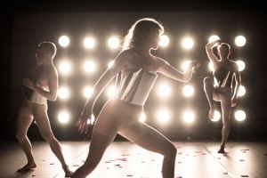

Design av lys og rom med Chrisander Brun - 1 dag.
- Kategori:
- Tverrfaglige kurs
Tverrfaglige kurs
Åpent for profesjonelle skuespillere og andre profesjonelle deltakere med spesifisert bakgrunn og erfaring. Se søknadsteksten for spesifikasjoner. Legg ved CV. - Dato:
- 08.12.2014 til 08.12.2014
- Start kl :
- 11:00
- Slutt kl :
- 16:00
- Pris:
- 300,-
- Adresse:
- Norsk Skuespillersenter, Welhavensgate 1, Oslo
 DESIGN AV LYS OG ROM
{kind=link}
SAMTALE / WORKSHOP MED CHRISANDER BRUN
Lysdesign er et av områdene mange skuespillere og dansere er nysgjerrige på, men ikke føler at de kan nok om. Lysdesigner Chrisander Brun leder deltakerne gjennom en samtalebasert workshop der fokus er lysdesign, rom og dramaturgi.
Chrisander Brun er en aktiv scenograf, lysdesigner og fotograf. Han har i lengre tid vært bosatt i Stockholm og tok sin BA i Fine Art in Performing Arts på Dramatiska Institutet i 2010. Brun har gjort scenografi og lysdesign ved ett stort antal danse- og teaterforestillinger i hele Skandinavia og mange arbeid har blitt presentert ved flere internationale scenkunstfestivaler i Europa.
En rød tråd som gjennomsyrer Chrisander sine arbeid er at lyset og rommet er et tydelig eliment som tar sin plass i verkene og som f.eks kan være en energi, en dramaturgisk drivmotor utenfor selve forestillingens dramaturgi. Lyset kan ofte sees på som arkitektonisk mer enn fortellende.
Under en dags samtale / workshop kommer Brun til å gå nærmere inn på:
- - Sine egne kunstnerlige prosesser og arbeidsmetoder
- - Rommet / lysets egene dramaturgiske reiser i verket
- - Lyset som en egen ”karakter” i rommet
Om det er spesielle ønsker om innganger til tenkning rundt lys / rom, er det veldig velkomment, så kurset blir så relevant for deltagerne som mulig.
Mer info om Chrisander fins på www.chrisander.no
{kind=link}
Mål
Målet er å øke skuespillerne og dansernes forståelse for lysdesign, både som utøvende og skapende kunstnere. Vi håper kurset kan gjøre deltakerne bedre rustet til å kommunisere med lysdesignere, og inspirere til tettere samarbeid. Noen gjør kanskje selv enkelt lysdesign på små forestillinger og vil ha nytte at et slikt kurs til dette arbeidet, mens de fleste nok ønsker denne kunnskapen for å øke sin kunnskap på et sentral felt innen teaterkunsten som mange vet lite om.
Pris for medlemmer av NSF: 250,-
Kurset arrangeres i samarbeid med Skuespiller- og danseralliansen.